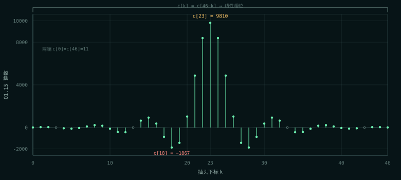
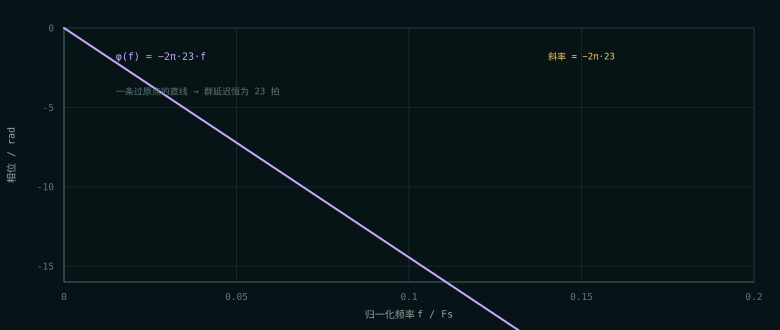
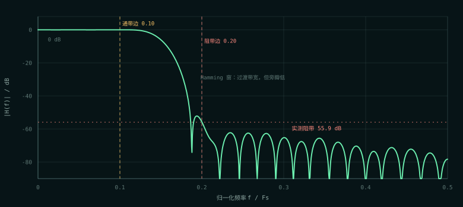
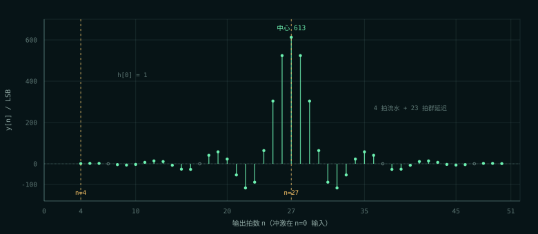

PART ONE · 通信原理
滤波就是加权滑动平均
卷积：每个输出都是最近 N 个输入的加权和
FIR 的全部性格都藏在系数 c[0…N−1] 里。给定输入 x[n]，输出是：
换一种说法：把输入打成一个冲激（一个 1 后面全是 0），输出就是系数表本身。所以冲激响应 = 系数，这是 FIR 最有用的一条对账关系，也是上板 ILA 能直接验证的东西。
在 DUC/DDC 里，FIR 是“筛子”：混频之后频谱里有和频、差频、镜像和杂散，插值/抽取又会再生镜像或造成混叠；FIR 只放行目标频带，把其余的压下去。它承担的是选带、抗镜像、抗混叠。本仓库 s05 的计划顺序是“混频 → FIR → 插值”，也有教材把插值放在混频前；具体顺序由系统规划决定，但 FIR 的职责不变。
理想低通是一堵墙，时域是一把 sinc
想要的低通频响是一个矩形：截止频率以内全放行，以外全压掉。它的逆变换是 sinc：
问题是 sinc 无限长、两侧衰减慢，造不出来。直接截断到 47 点，频域会出现剧烈的吉布斯纹波：阻带第一旁瓣只有约 −13 dB，“该压的没压住”。
解决办法是给 sinc 乘一个两头平滑衰减到 0 的窗，让边缘温柔收尾。本设计用 Hamming 窗：
c[n] = 理想 sinc[n] · w[n] → 归一化 → Q1.15 量化
Hamming 把第一旁瓣压到约 −43 dB，整体阻带约 −53 dB。代价是过渡带变宽：同样抽头数下，它不如等波纹（Parks-McClellan）陡。本设计选窗函数法，是因为它无迭代、无优化器，每个数字能手算核对——对一个“要讲得清、验得明”的重建项目，这是对的取舍。
| 设计项 | 取值 | 说明 |
|---|---|---|
| 抽头数 N | 47 | 奇数 → 群延迟 (N−1)/2 = 23，整数拍，测试好对账 |
| 归一化截止 | 0.15 | Fs = 50 MHz 时是 7.5 MHz |
| 窗 | Hamming | 旁瓣低，过渡带较宽 |
| 系数格式 | Q1.15，16 位补码 | 系数和精确 32768 = 215 |
| 通带 [0, 0.10] 纹波 | 0.037 dB | 通带几乎平 |
| 阻带 [0.20, 0.5] 衰减 | 55.7 dB | Hamming 窗的典型水平 |
| 最大 / 最小系数 | +9810 / −1867 | 中心最高，两端只有 11 |

c[k] = c[46−k] 严格成立，这是线性相位的来源，也是“预加”优化的前提。对称 = 线性相位 = 所有频率一起延迟
系数左右镜像对称时，频率响应可以写成：
φ(f) = −2π·23·f → 群延迟 τ = −(1/2π)·dφ/df = 23
相位是频率的直线，斜率对应 23 个采样的延迟。所有频率成分一起延迟 23 拍，波形形状不变，只是整体后移——这叫线性相位。IIR 或非对称 FIR 会让不同频率延迟不同，波形被“滤歪”。

流水线延迟 4 拍是寄存器造成的；群延迟 23 拍是系数对称造成的相位延迟。冲激打进去：第 4 拍先冒 h[0]=1，第 4+23=27 拍才到中心峰 613。TASK 里“第 4 拍出现 h[0]、中心 613”就是这两件事叠在一起，不是矛盾。
通带、阻带与过渡带
用板上真实系数做 FFT，可以看到 Hamming 窗的典型形状：通带很平（0.037 dB 纹波），过渡带从 0.10 到 0.20，阻带在 −55 dB 以下。用 Q1.15 整数系数重算，阻带最大值约 −55.9 dB；TASK 里的 55.7 dB 是浮点设计指标，差 0.2 dB 来自量化，属于正常。

为什么是 FIR，不是 IIR
- 严格线性相位：系数对称即可，波形不被滤歪；IIR 的相位是非线性的，通常要靠全通均衡器补偿。
- 无反馈、永远稳定：IIR 有极点，量化和舍入可能让它不稳定；FIR 只有零点。
- 对称 → 乘法器省一半：47 个抽头折叠成 24 个乘法器，正好对上 Artix-7 的 DSP48。
- 代价：要很多抽头才够陡。FIR 用“长度”换“陡度”，IIR 用“反馈”换“陡度”。
PART TWO · FPGA 实现
先加后乘，再分四级流水
对称预加：47 个乘法器怎么变成 24 个
直接型要 47 个乘法器。利用 c[k] = c[N−1−k]，把成对的输入先加起来再乘：
23 对 + 1 个中心抽头 = 24 个乘法器。加法器比乘法器便宜得多，而 Artix-7 的 DSP48 内部本来就有 pre-adder，通常一个 DSP 就能干“一对预加 + 一次乘”。
位宽：每一级都留够，最后才截
| 量 | 位宽 | 怎么来的 |
|---|---|---|
预加和 PA_W | 13 | 两个 12 位有符号数相加，可能到 13 位 |
单个乘积 PROD_W | 29 | 13 位 × 16 位全精度 |
乘积和 SUM_W | 35 | PROD_W + ceil(log2 24) + 1 = 29 + 5 + 1 |
最终和 FINAL_W | 36 | 加半个 LSB 可能把最大正值顶出 SUM_W |
输出 OW | 13 | 单位增益理论上 12 位够，多 1 位留余量 |
原则是中间全精度、最后才截。提前截中间结果省不下 DSP，只会白丢精度，还让“哪一位代表什么”变难查。输出 OW = IW+1 是保守选择：系数和 = 32768 时满幅 ±2048 理论上正好输出 ±2048，12 位就够；多 1 位是为了换增益系数时不用改接口，也避免舍入在边界上多 1 LSB 就溢出。
四级流水：每级只做一点
| 级 | 做什么 | 位宽 |
|---|---|---|
| 1 | 输入寄存 + 采样延迟线 x_r / dly[] | 12 |
| 2 | 对称预加 + 乘法 → p_reg[] | 29 |
| 3 | 4 组部分和 → gsum[]（每组最多 6 个乘积） | 35 |
| 4 | 4 组相加 + 舍入 + 右移 + 饱和 → y_out | 13 |
为什么加法树要分组：24 个 29 位乘积如果在一个周期里做 5 层加法，50 MHz 也许能过，但余量会被吃掉。分成“组内 3 层 + 组间 2 层”后，每级只有 3 层左右加法，时序余量大得多。代价是延迟 4 拍，FIR 在数据通路里，这完全可以接受。

n=0 输入：第 4 拍出现 h[0]=1，第 27 拍到达中心峰 613。4 是流水线延迟，23 是群延迟，两者叠加。系数进 FPGA：Q1.15 与“和必须是 32768”
FPGA 里不做浮点。系数在 PC 上算好、量化成 Q1.15 整数、写进 .mem，板上只做整数乘加。Q1.15 的意思是“1 个符号位 + 15 个小数位”：
单个系数最大只能到 +32767，因为 16 位有符号上限就是 32767；1.0 本身存不进一个系数。但“和 = 32768”是 47 个系数的算术求和，存在 35 位累加器里，不需要塞进 16 位。想通这点，就不会被“32768 怎么存得下”卡住。
让和精确等于 32768，是为了让低通的直流增益精确等于 1：
要求 y = x ⟺ Σ cint = 215 = 32768
如果和是 32767，直流增益变成 32767/32768，截断时会少 1 LSB，测试就无法写成严格相等。和 = 32768 时 >>> 15 是精确除法，直流逐位不变，和舍入模式无关。
量化后 Σc_int 未必恰好 32768，差几个 LSB 怎么办？全部塞给中心抽头：
c_int[中心] += 32768 - sum(c_int) // 奇数抽头只有中心是“单身”，动它不破坏 c[k] = c[N-1-k] // 动任何成对抽头都会破坏对称性，线性相位就没了
`.mem` + `$readmemh`：仿真和综合读同一份
系数文件是纯文本，一行一个十六进制补码数：coef.mem 47 行。RTL 里：
reg signed [CW-1:0] coef [0:N-1]; initial $readmemh({`FIR_COEFDIR, COEF_FILE}, coef);
FIR_COEFDIR 必须带双引号、结尾带斜杠（例如 "D:/proj/s03_fir/lut/"），并且改完目录后要 Reset Synthesis——Vivado 会缓存综合结果，不 reset 还用旧路径。这个宏和 s01 的 NCO_LUTDIR 是两个独立的宏，因为两张表在两个目录里。
舍入与饱和：`floor` 才是 RTL 的真实行为
ROUND=1 的实现是“加 214，再算术右移 15 位”。算术右移对负数是向 −∞ 取整，所以严格说它叫 round-half-up on the shifted value / floor toward −∞，在正半边看起来像四舍五入，在负半边的 .5 点上和“远离零舍入”差 1。
对账表 expected_h.md 因此用 floor((coef·2047 + 214)/215) 算，才和 RTL 一位不差。写测试时如果按“四舍五入”直觉写 round()，负数 tie 点会对不上，然后你会怀疑 RTL——其实 RTL 没错，是期望值写错了。
加半个 LSB 可能让最大正值越过 SUM_W，所以先加宽 1 位再饱和到 OW。饱和逻辑用 tb_fir.v 里 OW=8 的实例单独验，不靠主配置去撞边界。
验证：冲激响应就是系数表
| 层 | 手段 | 结果 |
|---|---|---|
| 冲激响应 | 47 个抽头逐个和 round(2047·c[k]/215) 比对 | 中心 613、两端 1、关于 k=23 对称 |
| 直流增益 | ±1000、+2047、−2048 的稳态输出 | 逐位恢复 |
| 参考向量 | 4 场景 × 512 样本（impulse / step / tones / random） | 逐位一致 |
| 舍入 / 饱和 | 5 抽头 tie、OW=8 实例 | ROUND 可区分；+127/−128 正确 |
| 参数化 | N=5/47、OW=8/13、IW=8/12 | 都测到 |
| 反向验证 | 改系数下标 / 关舍入 / 饱和改回绕 / 中心抽头错位 | 分别 12 / 10 / 2 / 11 条 FAIL |
四个 TB 共 81 个检查点：tb_fir 35、tb_fir_coef 15、tb_fir_top 21、tb_table_binding 10。F3（饱和改回绕）只变红 2 条，正好说明“主配置之外还要一个 OW=8 实例”：主配置离饱和边界很远，饱和逻辑改坏了它一点感觉都没有。
上板：8 个冲激，逐点对账
板级顶层 fir_top.v 每 1024 拍发一个单点冲激（幅度 2047），FIR 输出就是冲激响应，ILA 上直接和系数表对账：
| 项 | 实测 |
|---|---|
| 窗口 | 8192 点；冲激周期 1024 点 = 20.48 µs |
| 冲激数量 | 8 个完整冲激 |
| 响应 | 47 点；中心 613、两端 1、关于第 23 点对称 |
| 资源（纯设计） | 942 LUT / 1400 Reg / 0 BRAM / 21 DSP |
| 含 ILA | 1913 LUT / 3242 Reg / 3.5 BRAM；WNS +10.273 ns |
| CSV 对账 | 8 / 8 组与 expected_h.md 逐点一致，0 LSB |
DSP 是 21 不是结构上的 24：coef[3] / coef[13] 量化后为 0，两个乘法器被综合删掉；差的那 1 个原因还没坐实（可能是小常数乘走了移位加法）。不影响功能——判据是波形，不是资源数。
ILA 截图与逐点表在 上板展示 · s03 FIR。重点看中心 613、两端 1，以及 8 个冲激的间距是否都是 1024 点。
这轮留下的三个提醒
- 486 条 DPOR-1：
p_reg用异步复位，而 DSP 内部寄存器只认同步复位，乘积寄存器只能在外面另起一排。不影响功能，50 MHz 下有余量，暂不改。 - 系数设计只是第一版：Hamming、0.037 dB 通带纹波、55.7 dB 阻带。板级已对上，暂不改；要更陡就加抽头或换等波纹，但改系数必须同步重跑
make fir-coef和make fir-vec。 - 位宽衔接：s02 的 mixer 输出 13 位，FIR 默认
IW=12。s05 集成时要么把 FIR 例化成IW=13，要么在 mixer 后做增益/位宽规划——这就是“整条链路的增益预算”。
如果只记三件事
- FIR = 卷积；冲激响应 = 系数表。峰值出现的位置是群延迟，首抽头出现的位置是流水线延迟，两者不是一回事。
- 系数对称 → 线性相位 + 乘法器减半。47 个抽头折叠成 24 个乘法器；实测 21 个 DSP 是因为有两个系数量化后为 0。
- 系数和 = 215 让直流增益精确为 1，
>>>15成为精确除法；量化残差塞给中心抽头，不破坏对称性。